Let’s start with the simplest of all functions, the constant function \(f(x) = c\). The graph of this function is the horizontal line \(y = c\), which has slope , so we must have \(f^{\prime}(x) = 0\). (See Figure 1.) A formal proof, from the definition of a derivative, is also easy:
\[ f^{\prime}(x) = \lim_{h \to 0} \frac{f(x + h) - f(x)}{h} = \lim_{h \to 0} \frac{c - c}{h} \lim_{h \to 0} 0 = 0 \]
In Leibniz notation, we write this rule as follows.
\[ \frac{d}{dx}(c) = 0 \]
We next look at the function \(f(x) = x^{n}\), where \(n\) is a positive integer. If \(n = 1\), the graph of \(f(x) = x\) is the line \(y = x\), which has slope 1. (See Figure 2.) So
\[ \frac{d}{dx}(x) = 1 \]
\[ \frac{d}{dx}(x^{2}) = 2x \;\;\; \frac{d}{dx}(x^{3}) = 3x^{2} \]
For \(n = 4\) we find the derivative of \(f(x) = x^{4}\) as follows:
\[ \begin{aligned} f^{\prime}(x) &= \lim_{h \to 0} \frac{f(x + h) - f(x)}{h} = \lim_{h \to 0} \frac{(x + h)^{4} - x^{4}}{h} \\ &= \frac{x^{4} + 4x^{3} + 6x^{2}h^{2} + 4xh^{3} + h^{4} - x^{4}}{h} \\ &= \frac{4x^{3}h + 6x^{2}h^{2} + 4xh^{3} + h^{4}}{h} \\ &= \lim_{h \to 0} (4x^{3} + 6x^{2}h + 4xh^{2} + h^{3}) = 4x^{3} \end{aligned} \]
Thus
\[ \frac{d}{dx}(x^{4}) = 4x^{3} \]
If \(n\) is a positive integer, then
\[ \frac{d}{dx}(x^{n}) = nx^{n - 1} \]
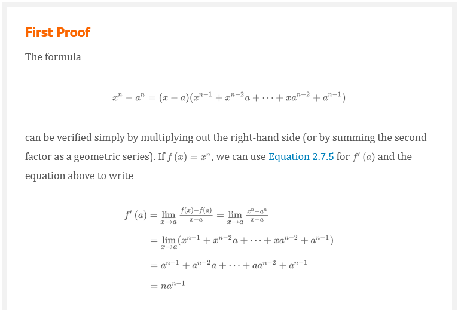 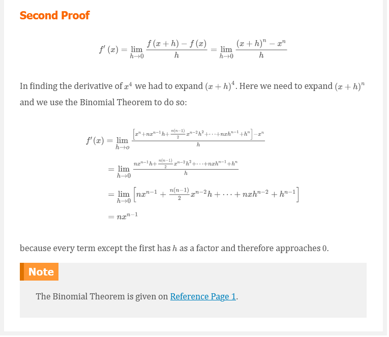
We illustrate the Power Rule using various notations in Example 1.
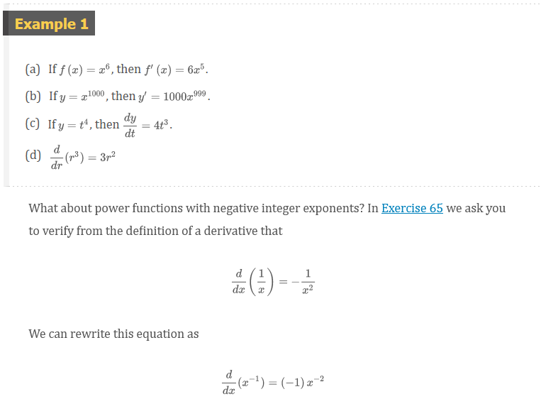 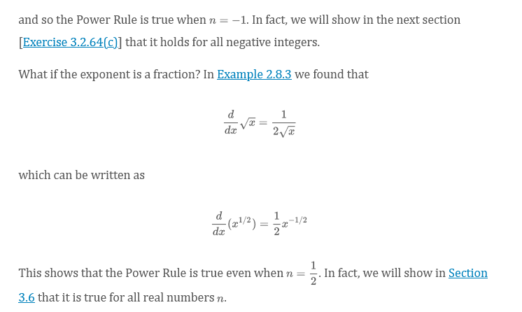
The Power Rule (General Version)
If \(n\) is any real number, then
\[ \frac{d}{dx}(x^{n}) = nx^{n - 1} \]
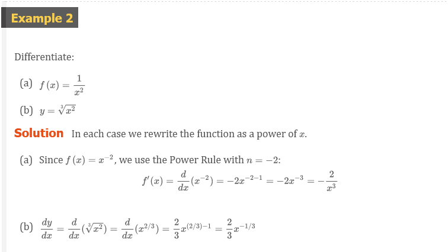 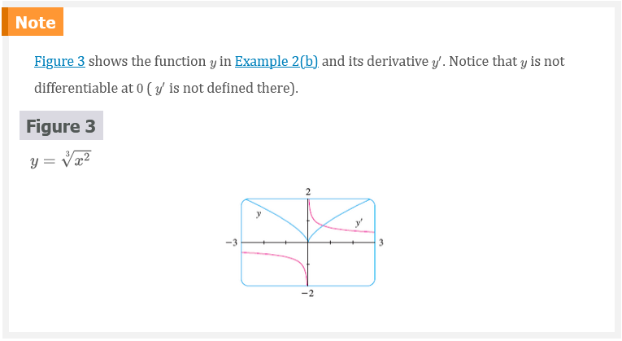
Observe from Figure 3 that the function \(y\) in Example 2(b) is increasing when \(y^{\prime}\) is positive and is decreasing when \(y^{\prime}\) is negative. In Chapter 4 we will prove that, in general, a function increases when its derivative is positive and decreases when its derivative is negative.
The Power Rule enables us to find tangent lines without having to resort to the definition of a derivative. It also enables us to find normal lines. The normal line to a curve \(C\) at a point \(P\) is the line through \(P\) that is perpendicular to the tangent line at \(P\). (In the study of optics, one needs to consider the angle between a light ray and the normal line to a lens.)
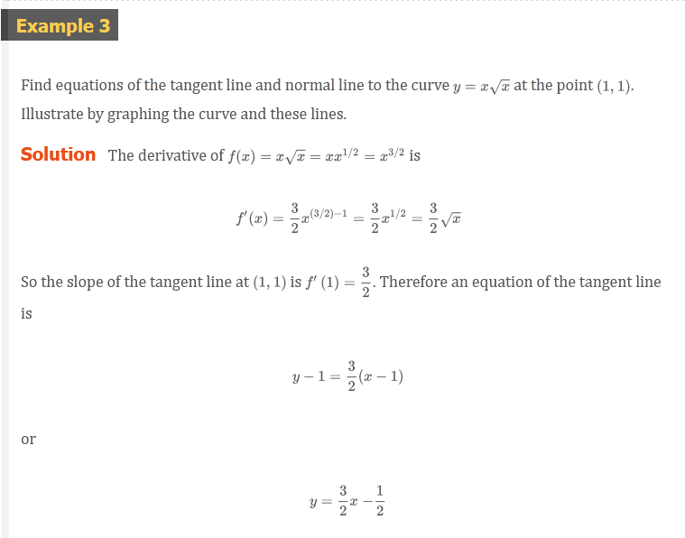 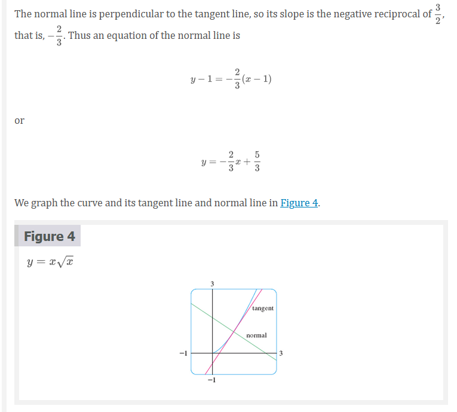
When new functions are formed from old functions by addition, subtraction, or multiplication by a constant, their derivatives can be calculated in terms of derivatives of the old functions. In particular, the following formula says that the derivative of a constant times a function is the constant times the derivative of the function.
The Constant Multiple Rule
If \(c\) is a constant and \(f\) is a differentiable function, then
\[ \frac{d}{dx}[cf(x)] = c\frac{d}{dx}f(x) \]
The Sum Rule
If \(f\) and \(g\) are both differentiable, then
\[ \frac{d}{dx}[f(x) + g(x)] = \frac{d}{dx}f(x) + \frac{d}{dx}g(x) \]
Using the prime notation, we can write the Sum Rule as
\[ (f + g)^{\prime} = f^{\prime} + g^{\prime} \]
The Difference Rule
If \(f\) and \(g\) are both differentiable, then
\[ \frac{d}{dx}[f(x) - g(x)] = \frac{d}{dx}f(x) - \frac{d}{dx}g(x) \]
The Constant Multiple Rule, the Sum Rule, and the Difference Rule can be combined with the Power Rule to differentiate any polynomial, as the following examples demonstrate.
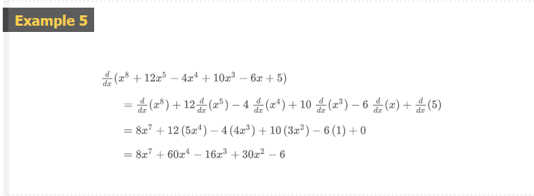 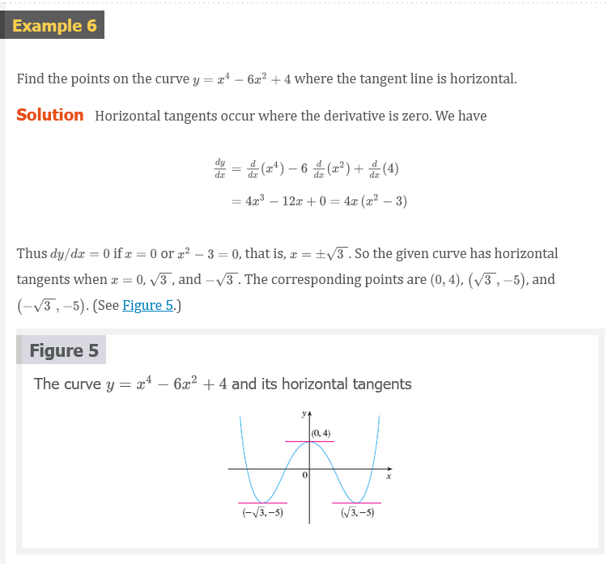 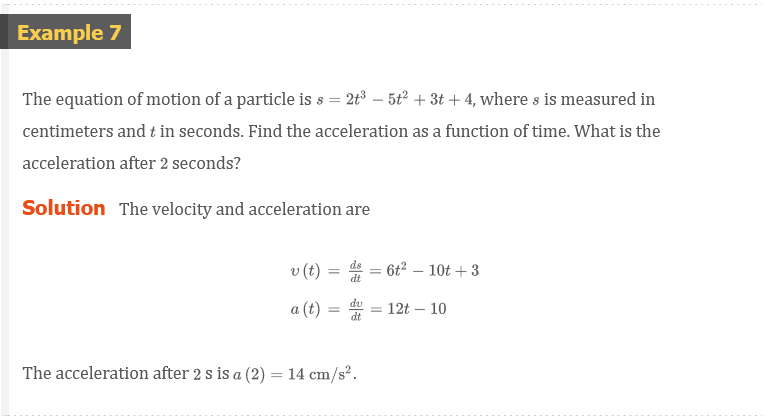
Let’s try to compute the derivative of the exponential function \(f(x) = b^{x}\) using the definition of a derivative:
\[ \begin{aligned} f^{\prime} &= \lim_{h \to 0}\frac{f(x + h) - f(x)}{h} = \lim_{h \to 0}\frac{b^{x + h} - b^{x}}{h} \\ &= \lim_{h \to 0}\frac{b^{x}b^{h} - b^{x}}{h} = \lim_{h \to 0}\frac{b^{x}(b^{h} - 1)}{h} \end{aligned} \]
The factor doesn’t depend on , so we can take it in front of the limit:
\[ f^{\prime}(x) = b^{x} \lim_{h \to 0}\frac{b^{h} - 1}{h} \]
Notice that the limit is the value of the derivative of at , that is,
\[ \lim_{h \to 0}\frac{b^{h} - 1}{h} = f^{\prime}(0) \]
Therefore we have shown that if the exponential function \(f(x) = b^{x}\) is differentiable at \(0\), then it is differentiable everywhere and
\[ f^{\prime}(x) = f^{\prime}(0)b^{x} \]
This equation says that the rate of change of any exponential function is proportional to the function itself. (The slope is proportional to the height.)
Numerical evidence for the existence of \(f^{\prime}(0)\) is given in the table below for the cases \(b = 2\) and \(b = 3\). (Values are stated correct to four decimal places.) It appears that the limits exist and
\[ forb = 2, f^{\prime}(0) = \lim_{h \to 0}\frac{2^{h} - 1}{h} \approx 0.69 forb = 3, f^{\prime}(0) = \lim_{h \to 0}\frac{3^{h} - 1}{h} \approx 1.10 \]
| \(h\) | \(\frac{2^{h} - 1}{h}\) | \(\frac{3^{h} - 1}{h}\) |
|---|---|---|
| 0.1 | 0.7177 | 1.1612 |
| 0.01 | 0.6956 | 1.1047 |
| 0.001 | 0.6934 | 1.0992 |
| 0.0001 | 0.6932 | 1.0987 |
In fact, it can be proved that these limits exist and, correct to six decimal places, the values are
\[ \frac{d}{dx}(2^{x})\Bigl |_{x = 0} \approx 0.693147 \;\;\; \frac{d}{dx}(3^{3}) \Bigr |_{x = 0} \approx \]
\[ \frac{d}{dx}(2^{x}) \approx (0.69)2^{x} \;\;\; \frac{d}{dx}(3^{3}) \approx (1.10)3^{x} \]
Of all possible choices for the base in Equation 4, the simplest differentiation formula occurs when \(f^{\prime}(0) = 1\). In view of the estimates of \(f^{\prime}(0)\) for \(b = 2\) and \(b = 3\), it seems reasonable that there is a number \(b\) between \(2\) and \(3\) for which \(f^{\prime}(0) = 1\). It is traditional to denote this value by the letter \(e\). (In fact, that is how we introduced in Section 1.4.) Thus we have the following definition.
Definition of the Number \(e\)
\(e\) is the number such that
\[ \lim_{h \to 0}\frac{e^{h} - 1}{h} = 1 \]
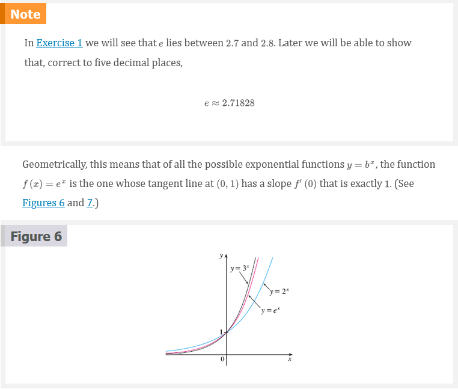 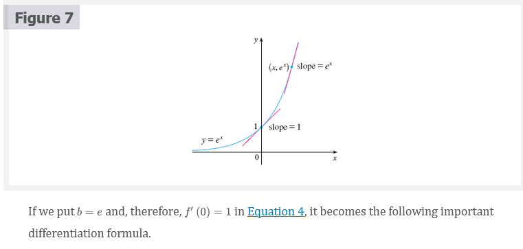
Derivative of the Natural Exponential Function
\[ \frac{d}{dx}(e^{x}) = e^{x} \]
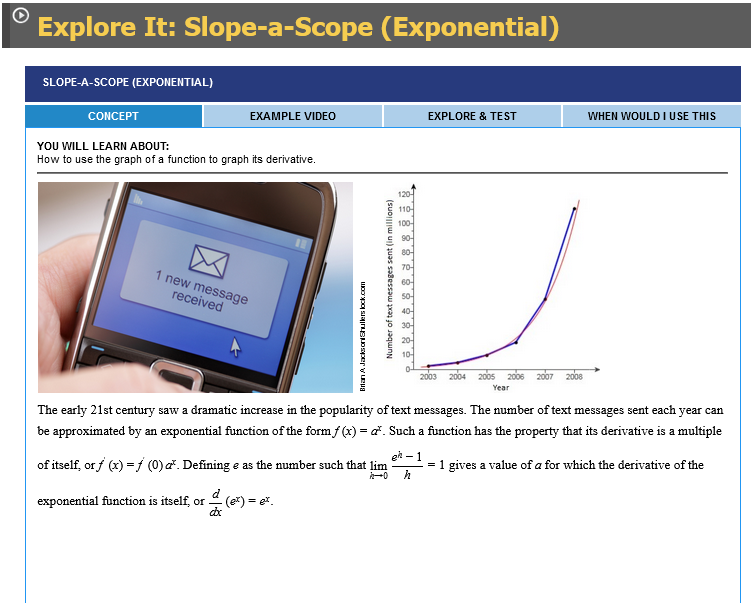 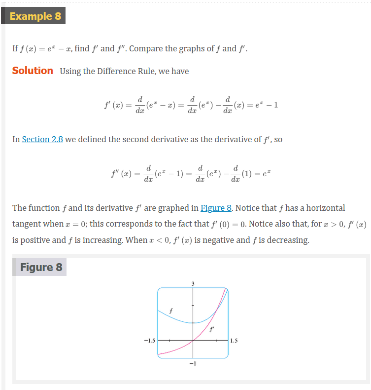 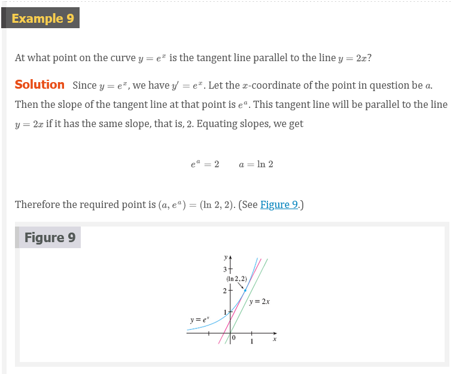